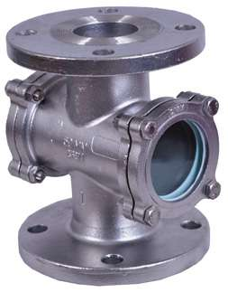

Glass pipeline
Precision engineered since 1998
Glassware & fluid systems built to the exact tolerance your process needs.
From a single graduated flask to a full distillation train, sanitary valve or PTFE hose assembly — one supplier, one quality standard.
0Years fabricating
0Products
0Countries

For enquiries
Talk to an engineer, not a call centre.
Start here
Fluid transfer & fittings
Hoses, valves and fittings for hygienic process lines.
PTFE and silicone hose assemblies, sanitary valves, ASME-BPE tubes and filter housings — clean-bore, leak-tested, traceable.
0Assemblies shipped
0Industries served
3.3Borosilicate grade

For enquiries
Send your spec — we'll match the assembly.
Start hereDocumented QCDimensional & leak tested
In-house madeFull traceability
On-time deliveryLead times you can plan
Export packing40+ countries shipped
Who we are
We measure twice, then we measure again.
For over two decades, Lata Scientific has formed, annealed and tested borosilicate glass and fabricated fluid-transfer assemblies for operations that can't afford a variable. We sit between the bench chemist and the process plant — small enough for a one-off custom column, equipped enough for a full reaction train.
- Borosilicate 3.3 glass and 316L / PTFE contact materials
- Ground-glass and tri-clamp joints machined to standard
- Every unit leak- or vacuum-tested against its method sheet
What we make
Two catalogues, one standard of build.
Precision glass and process equipment, plus the hoses, valves and fittings that connect it all.
Lined steel
Flow visibility
Featured products
The pieces that leave our floor most.
Glass and steel, held to gauge — a rolling look at what we build week in, week out.
Product categories
Three ranges. Pick your starting point.
Every card opens its full catalogue — products, specs and downloadable brochures.

Pipeline Components
Pipe sections, bends, tees, crosses and closures — borosilicate 3.3, held to gauge.
Explore range
Sight Flow Indicators
Double window and tubular sight glasses — stainless, mild steel, PP and FEP/PFA lined, 15NB to 400NB.
Explore range
PTFE Lined Pipes & Fittings
PTFE, PFA and FEP lined carbon steel — spools, elbows, tees, dip pipes and bellows to ASTM F 1545.
Explore rangeWhy Lata Scientific
Precision is not a finish. It's the whole method.
Right materials, always
Borosilicate 3.3 glass, 316L stainless and virgin PTFE — the grades your process specifies, never a cheaper substitute.
Standards that interchange
Ground-glass cones, tri-clamp ferrules and ASME-BPE fittings machined to standard so parts mate with your existing rig.
Tested, then documented
Dimensional checks, anneal verification and leak/vacuum tests are logged. Certificates of conformance on request.
Bench to production
10 mL flasks to 200 L jacketed reactors and full hose assemblies — one supplier from proof-of-concept to plant.
Built to your drawing
Send a sketch, a P&ID or a broken part. We fabricate to spec and return dimensioned drawings for your records.
Export-grade packing
Foam-cradled and crate-tested for sea and air freight — glass that arrives intact, forty countries and counting.
0
Years of experience
0
Projects completed
0
Clients served
0
Countries shipped
Industries we serve
Wherever purity and precision are non-negotiable.
PharmaceuticalGMP process & API
ChemicalCorrosion-proof trains
ResearchBespoke rigs
EducationTeaching labs
Food & beverageExtraction & recovery
BiotechnologyBioprocess dev
IndustrialPilot & production
CosmeticFormulation labs
Client trust
Relied on at the bench and in the plant.
Have a spec, a drawing, or just a question?
Tell us what your process needs. An engineer replies within one business day — with a real answer, not a brochure.
Request a quote